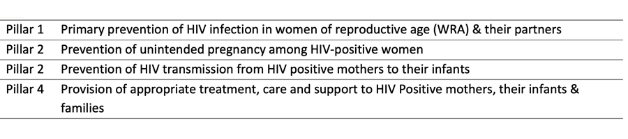
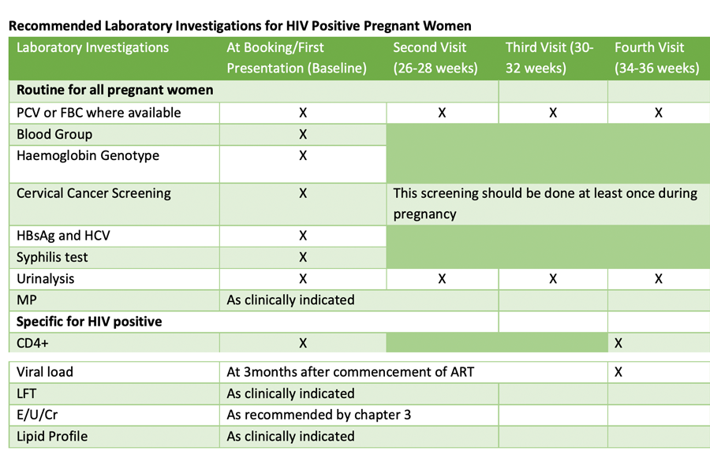
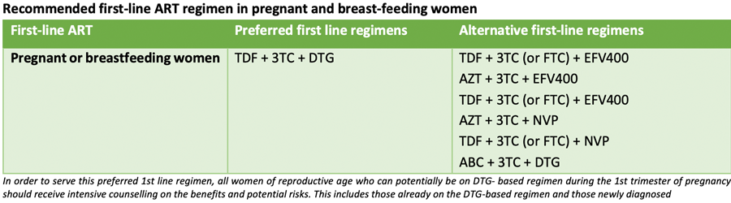
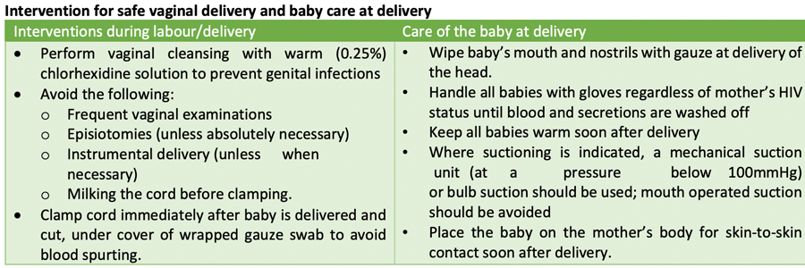
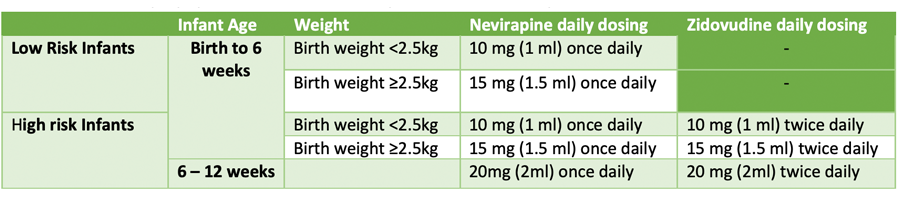
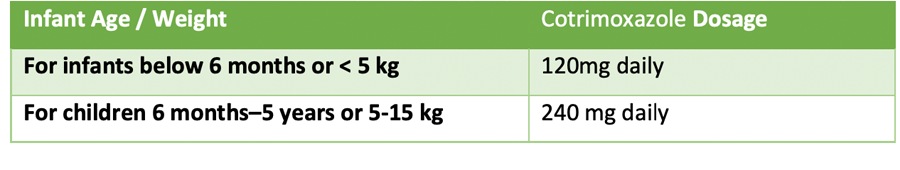
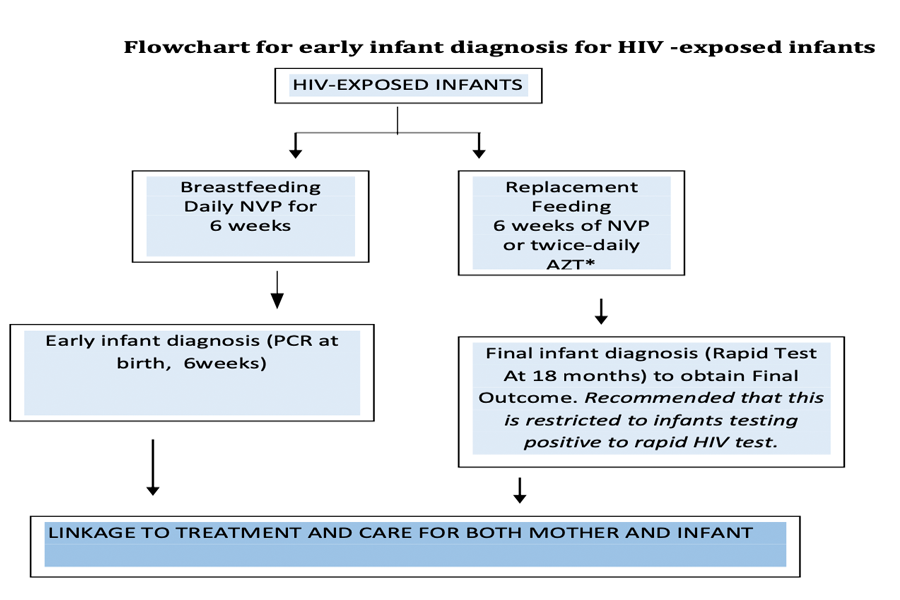

PREVENTION OF MOTHER TO CHILD TRANSMISSION OF HIV INFECTION
To stop the vertical transmission of HIV, WHO introduced a set of interrelated public health interventions designed to prevent transmission of the virus from an HIV positive mother to her child during the period of pregnancy, delivery and breastfeeding.
Prevention of MTCT is the package of care given to pregnant women, their families and communities, aimed at preventing transmission of HIV from infected mothers to their babies (vertical transmission). It operates on 4 pillars:


Pregnancy in HIV positive woman is an absolute indication for ART. ART should be initiated in all HIV pregnant and breast- feeding women regardless of WHO clinical stage and at any CD4+ cell count and continued for life.


High risk infants are those:
All HIV exposed infants should receive ARV prophylaxis. Infants at low risk of acquiring HIV from their mothers should receive NVP only once daily for 6 weeks. While infants born to mothers with HIV who are at high risk of acquiring HIV should receive dual prophylaxis with AZT (twice daily) and NVP (once daily) for the first 12 weeks of life,

Born to women with established HIV infection who have received less than four weeks of ART at the time of delivery
OR
Born to women with established HIV infection with viral load >1000 copies/mL in the four weeks before delivery
OR
Born to women with incident HIV infection during pregnancy (this includes women diagnosed in labour) or breastfeeding
OR
Identified for the first time during the postpartum period, with or without a negative HIV test prenatally
Cotrimoxazole prophylaxis is recommended for HIV-exposed infants from 6 weeks of age and should be continued until HIV infection has been excluded by an age-appropriate HIV test 8 weeks after complete cessation of breastfeeding.

